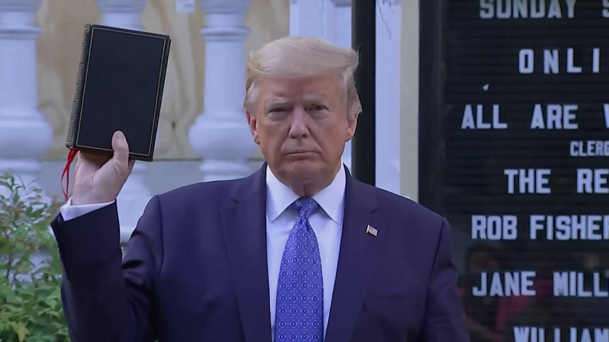

President Donald Trump has made false statements and implications about how three Democratic officials responded to violent protests that followed George Floyd’s death in police custody in Minneapolis:
- Trump said the mayor of Washington, D.C., “wouldn’t let the D.C. Police get involved” during a turbulent protest outside the White House. The Secret Service said the local police were involved.
- Trump urged Philadelphia officials to call in the National Guard to help stop looting — hours after they had already done so.
- Trump said Minneapolis had been too slow to bring in the National Guard, and again got the timeline wrong.
The inaccuracies come as the president has scolded state and local officials, often singling out Democrats, for not being tough enough in dealing with protests. In a conference call June 1, Trump told the nation’s governors they were “weak” and said they needed to act more aggressively in quelling violent behavior.
For The Full Article: CLICK HERE